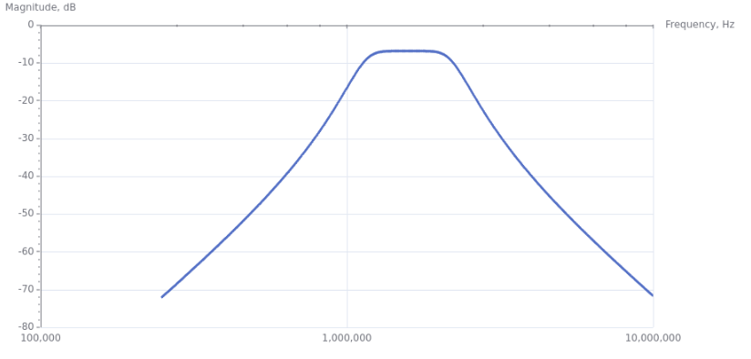
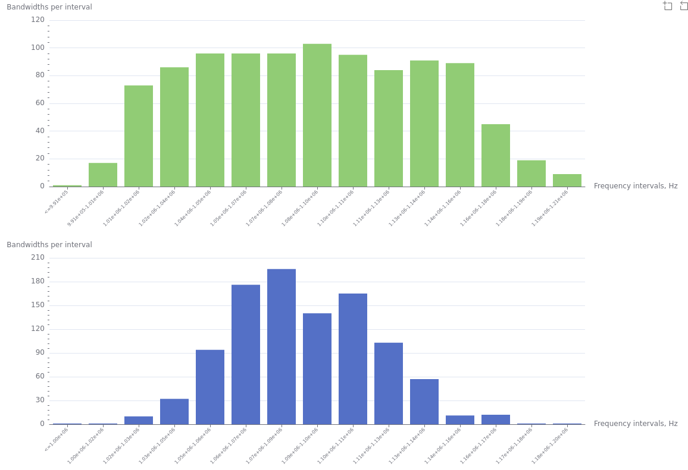
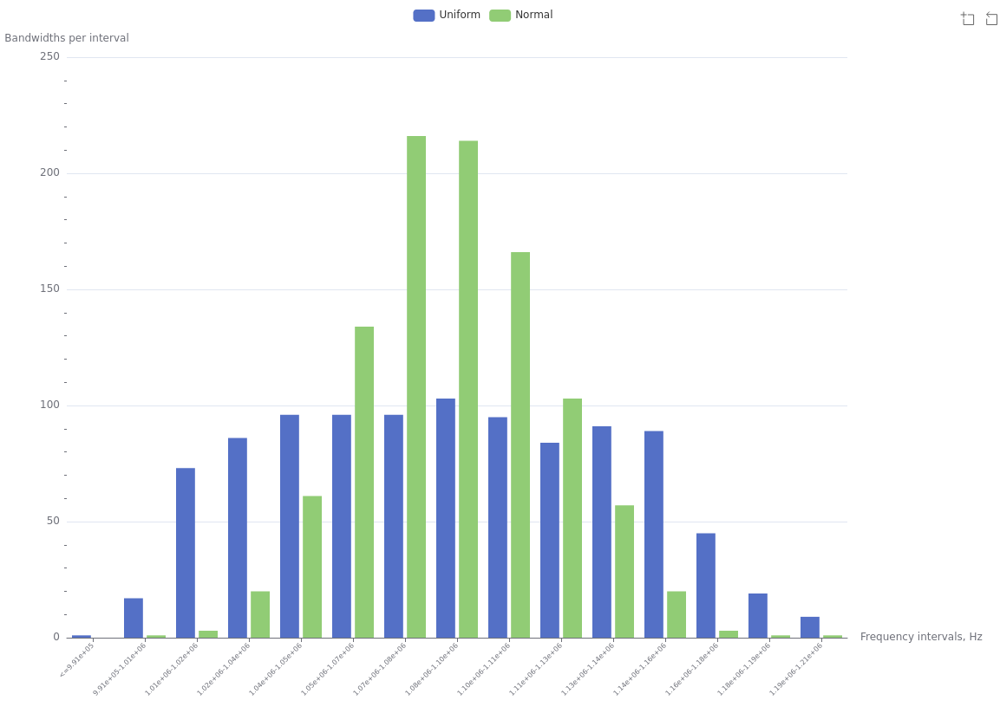

AdvancedTop, Main, Index
This section provides advanced examples from the examples folder in the root directory of SpiceGenTcl. Rather than focusing on basic operations, we highlight advanced use cases that showcase the full capabilities of both the package and the Tcl language. List of availible examples:
- Monte-Carlo simulation - "examples/ngspice/advanced/monte_carlo.tcl" and "examples/xyce/advanced/monte_carlo.tcl" file
Monte-Carlo simulationTop, Main, Index
This example demonstrates multiple runs of a simple filter circuit and the collection of the resulting statistical distribution of frequency bandwidths. The original circuit source is from the ngspice source distribution. The target filter circuit is:

The filter is a 3rd-order Chebyshev bandpass. The first step is to build the circuit and obtain the magnitude of the transfer characteristic:
# create top-level circuit
set circuit [Circuit new {Monte-Carlo}]
# add elements to circuit
$circuit add [Vac new 1 n001 0 -ac 1]
$circuit add [R new 1 n002 n001 -r 141]
$circuit add [R new 2 0 out -r 141]
C create c1 1 out 0 -c 1e-9
L create l1 1 out 0 -l 10e-6
C create c2 2 n002 0 -c 1e-9
L create l2 2 n002 0 -l 10e-6
C create c3 3 out n003 -c 250e-12
L create l3 3 n003 n002 -l 40e-6
foreach elem [list c1 l1 c2 l2 c3 l3] {
$circuit add $elem
}
$circuit add [Ac new -variation oct -n 100 -fstart 250e3 -fstop 10e6]
#set simulator with default
set simulator [Batch new {batch1}]
# attach simulator object to circuit
$circuit configure -Simulator $simulator
Here, we use a different method for creating a class instance: create instead of new. With create, we can directly set a custom object reference name, rather than relying on the automatically generated one by Tcl.
C create c1 1 out 0 -c 1e-9
Keep in mind that c1 is an object reference, not the name of a variable storing the reference. Therefore, it can be used as an object command directly, without the need for a $.
To calculate the magnitude of the transfer function in dB scale from the output voltage phasor, we create a procedure:
proc calcDbMag {re im} {
set mag [expr {sqrt($re*$re+$im*$im)}]
set db [expr {10*log($mag)}]
return $db
}
proc calcDbMagVec {vector} {
foreach value $vector {
lappend db [calcDbMag [lindex $value 0] [lindex $value 1]]
}
return $db
}
calcDbMagVec | Procedure that apply calcDbMag to list of complex values. |
Run and plot the result:
# run simulation
$circuit runAndRead
# get data dictionary
set data [$circuit getDataDict]
set trace [calcDbMagVec [dict get $data v(out)]]
set freqs [dict get $data frequency]
foreach x $freqs y $trace {
lappend xydata [list [lindex $x 0] $y]
}
set chartTransMag [ticklecharts::chart new]
$chartTransMag Xaxis -name "Frequency, Hz" -minorTick {show "True"} -type "log"
$chartTransMag Yaxis -name "Magnitude, dB" -minorTick {show "True"} -type "value"
$chartTransMag SetOptions -title {} -tooltip {} -animation "False" -toolbox {feature {dataZoom {yAxisIndex "none"}}} -grid {left "10%" right "15%"}
$chartTransMag Add "lineSeries" -data $xydata -showAllSymbol "nothing" -symbolSize "1"
set fbasename [file rootname [file tail [info script]]]
$chartTransMag Render -outfile [file normalize [file join html_charts ${fbasename}_typ.html]] -width 1000px

We define pass bandwidth by edge values -10dB, to find them we use next procedure:
proc findBW {freqs vals trigVal} {
# calculate bandwidth of results
set freqsLen [llength $freqs]
for {set i 0} {$i<$freqsLen} {incr i} {
set iVal [lindex $vals $i]
set ip1Val [lindex $vals [+ $i 1]]
if {($iVal<=$trigVal) && ($ip1Val>=$trigVal)} {
set freqStart [lindex $freqs $i]
} elseif {($iVal>=$trigVal) && ($ip1Val<=$trigVal)} {
set freqEnd [lindex $freqs $i]
}
}
set bw [expr {$freqEnd-$freqStart}]
return $bw
}
Find bandwidth:
puts [findBW [lmap freq $freqs {lindex $freq 0}] $trace -10]
The value is 1.086255 Mhz.
Our goal is to obtain a distribution of bandwidths by varying the filter parameters. To generate random values for these parameters, we use the built-in functions of the math::statistics package from Tcllib. The parameters can be distributed either normally or uniformly. For uniform distribution, we use ::math::statistics::random-uniform xmin xmax number; for normal distribution, we use ::math::statistics::random-normal mean stdev number. For uniform distribution, we define the following min and max limits for each C and L element:
set distLimits [dict create c1 [dict create min 0.9e-9 max 1.1e-9] l1 [dict create min 9e-6 max 11e-6] c2 [dict create min 0.9e-9 max 1.1e-9] l2 [dict create min 9e-6 max 11e-6] c3 [dict create min 225e-12 max 275e-12] l3 [dict create min 36e-6 max 44e-6]]
We can specify different numbers of simulations; the more runs we perform, the more accurate the representation becomes. For example, we set the number of simulations to 1,000 runs with 15 intervals for constructing a boxplot:
# set number of simulations set mcRuns 100 set numOfIntervals 15
Now we ready to run simulations 1000 times and collect results:
# loop in which we run simulation with uniform distribution
for {set i 0} {$i<$mcRuns} {incr i} {
#set elements values according to uniform distribution
foreach elem [list c1 l1 c2 l2 c3 l3] {
$elem setParamValue [string index $elem 0] [random-uniform {*}[dict values [dict get $distLimits $elem]] 1]
}
# run simulation
$circuit runAndRead
# get data dictionary
set data [$circuit getDataDict]
# get results
if {$i==0} {
set freqs [dict get $data frequency]
foreach freq $freqs {
lappend freqRes [lindex $freq 0]
}
}
# get vout frequency curve
lappend traceListUni [calcDbMagVec [dict get $data v(out)]]
# calculate bandwidths values
lappend bwsUni [findBW $freqRes [lindex $traceListUni end] -10]
}
To obtain the distribution, we need to determine reasonable limits based on the minimum and maximum of the generated bandwidth values. Using the specified number of intervals (15), we apply the following procedure:
proc createIntervals {data numOfIntervals} {
set intervals [::math::statistics::minmax-histogram-limits [tcl::mathfunc::min {*}$data] [tcl::mathfunc::max {*}$data] $numOfIntervals]
lappend intervalsStrings [format "<=%.2e" [lindex $intervals 0]]
for {set i 0} {$i<[- [llength $intervals] 1]} {incr i} {
lappend intervalsStrings [format "%.2e-%.2e" [lindex $intervals $i] [lindex $intervals [+ $i 1]]]
}
return [dict create intervals $intervals intervalsStr $intervalsStrings]
}
Here, we use the dedicated procedure from the statistics package: ::math::statistics::minmax-histogram-limits min max number. Additionally, we construct strings in form leftVal-rightVal that represent the intervals on the boxplot chart. We call this procedure and store the results:
set uniIntervals [createIntervals $bwsUni $numOfIntervals]
Finally, to obtain the expected histogram for a uniform distribution, we use the following procedure with the built-in function: ::math::statistics::histogram-uniform xmin xmax limits number:
proc createDist {data intervals} {
set dist [::math::statistics::histogram $intervals $data]
return [lrange $dist 0 end-1]
}
Call the createDist procedure to calculate the histogram y-axis values, which correspond to the number of bandwidths within each interval:
set normDist [createDist $bwsNorm [dict get $normIntervals intervals]]
The same sequence of steps is applied for the normal distribution. We assume that std = (xmax - xmin) / 6, where xmax and xmin are the limits of the uniform distribution.
# set parameter's normal distributions limits
set normalLimits [dict create c1 [dict create mean 1e-9 std [/ 0.1e-9 3]] l1 [dict create mean 10e-6 std [/ 1e-6 3]] c2 [dict create mean 1e-9 std [/ 0.1e-9 3]] l2 [dict create mean 10e-6 std [/ 1e-6 3]] c3 [dict create mean 250e-12 std [/ 25e-12 3]] l3 [dict create mean 40e-6 std [/ 4e-6 3]]]
## loop in which we run simulation with normal distribution
for {set i 0} {$i<$mcRuns} {incr i} {
#set elements values according to normal distribution
foreach elem [list c1 l1 c2 l2 c3 l3] {
$elem setParamValue [string index $elem 0] [random-normal {*}[dict values [dict get $normalLimits $elem]] 1]
}
# run simulation
$circuit runAndRead
# get data dictionary
set data [$circuit getDataDict]
# get results
if {$i==0} {
set freqs [dict get $data frequency]
foreach freq $freqs {
lappend freqRes [lindex $freq 0]
}
}
# get vout frequency curve
lappend traceListNorm [calcDbMagVec [dict get $data v(out)]]
# calculate bandwidths values
lappend bwsNorm [findBW $freqRes [lindex $traceListNorm end] -10]
}
# get distribution of bandwidths with normal parameters distribution
set normIntervals [createIntervals $bwsNorm $numOfIntervals]
set normDist [createDist $bwsNorm [dict get $normIntervals intervals]]
Finally, we plot resulted distributions:
# plot results with ticklecharts
# chart for uniformly distributed parameters
set chartUni [ticklecharts::chart new]
$chartUni Xaxis -name "Frequency intervals, Hz" -data [list [dict get $uniIntervals intervalsStr]] -axisTick {show "True" alignWithLabel "True"} -axisLabel {interval "0" rotate "45" fontSize "8"}
$chartUni Yaxis -name "Bandwidths per interval" -minorTick {show "True"} -type "value"
$chartUni SetOptions -title {} -tooltip {} -animation "False" -toolbox {feature {dataZoom {yAxisIndex "none"}}}
$chartUni Add "barSeries" -data [list $uniDist]
# chart for normally distributed parameters
set chartNorm [ticklecharts::chart new]
$chartNorm Xaxis -name "Frequency intervals, Hz" -data [list [dict get $normIntervals intervalsStr]] -axisTick {show "True" alignWithLabel "True"} -axisLabel {interval "0" rotate "45" fontSize "8"}
$chartNorm Yaxis -name "Bandwidths per interval" -minorTick {show "True"} -type "value"
$chartNorm SetOptions -title {} -tooltip {} -animation "False" -toolbox {feature {dataZoom {yAxisIndex "none"}}}
$chartNorm Add "barSeries" -data [list $normDist]
# create multiplot
set layout [ticklecharts::Gridlayout new]
$layout Add $chartNorm -bottom "10%" -height "35%" -width "75%"
$layout Add $chartUni -bottom "60%" -height "35%" -width "75%"
set fbasename [file rootname [file tail [info script]]]
$layout Render -outfile [file normalize [file join html_charts $fbasename.html]] -height 800px -width 1200px

We can clearly see the difference between normal and uniform distributions; the intervals are close due to setting the standard deviation of the normal distribution as std = (xmax - xmin) / 6.
We can also take the uniform intervals and calculate the normal distribution values at these intervals:
# find distribution of normal distributed values in uniform intervals
set normDistWithUniIntervals [createDist $bwsNorm [dict get $uniIntervals intervals]]
set chartCombined [ticklecharts::chart new]
$chartCombined Xaxis -name "Frequency intervals, Hz" -data [list [dict get $uniIntervals intervalsStr]] -axisTick {show "True" alignWithLabel "True"} -axisLabel {interval "0" rotate "45" fontSize "8"}
$chartCombined Yaxis -name "Bandwidths per interval" -minorTick {show "True"} -type "value"
$chartCombined SetOptions -title {} -legend {} -tooltip {} -animation "False" -toolbox {feature {dataZoom {yAxisIndex "none"}}} -grid {left "10%" right "15%"}
$chartCombined Add "barSeries" -data [list $uniDist] -name "Uniform"
$chartCombined Add "barSeries" -data [list $normDistWithUniIntervals] -name "Normal"
$chartCombined Render -outfile [file normalize [file join html_charts ${fbasename}_combined.html]] -height 800px -width 1200px
